FedPrivTab：交互形式 + API 形式对比三个模型
GitHub：https://github.com/oneflow1/FedPrivTab
生成时间：2026-06-18 06:13:49 UTC。本 HTML 对照展示交互式产品流程、真实 API 脚本、matplotlib 绘图代码和对应 PNG 输出。
一、交互形式：产品精简版训练流程
这一部分按 README 风格概览 FedPrivTab 的产品化训练路径：先登录进入工作台，再完成客户端数据准备，随后分别运行集中式 MLP、FedAvg MLP 和 DP-FedAvg MLP，最后在结果分析页查看指标与曲线。
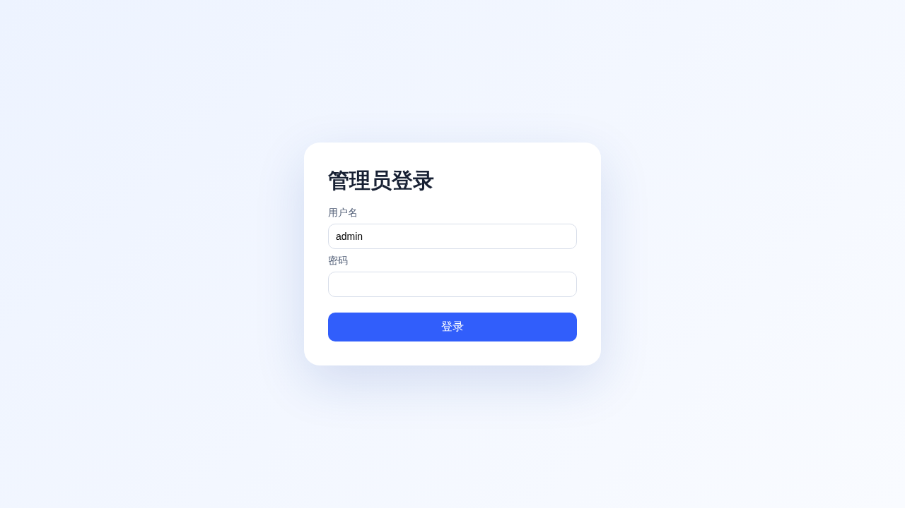
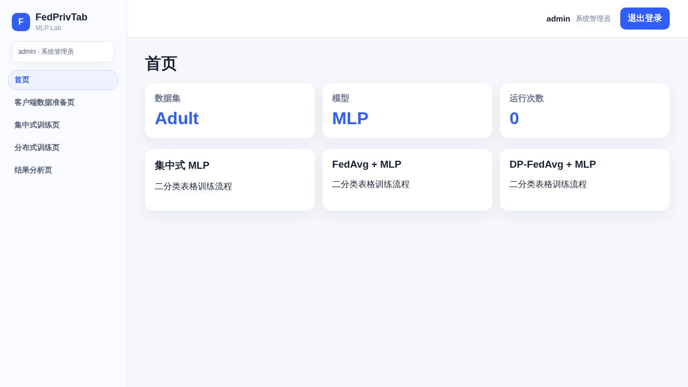
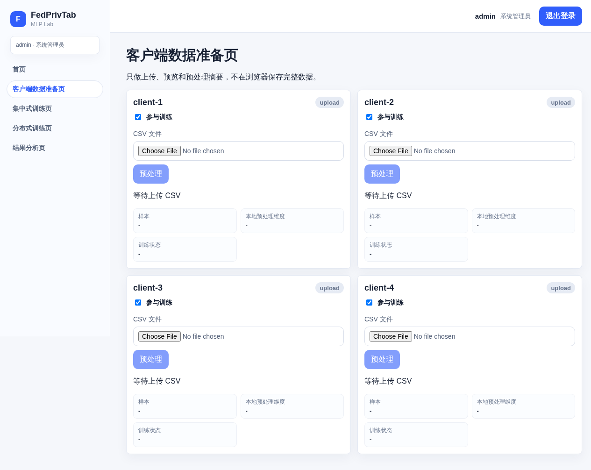
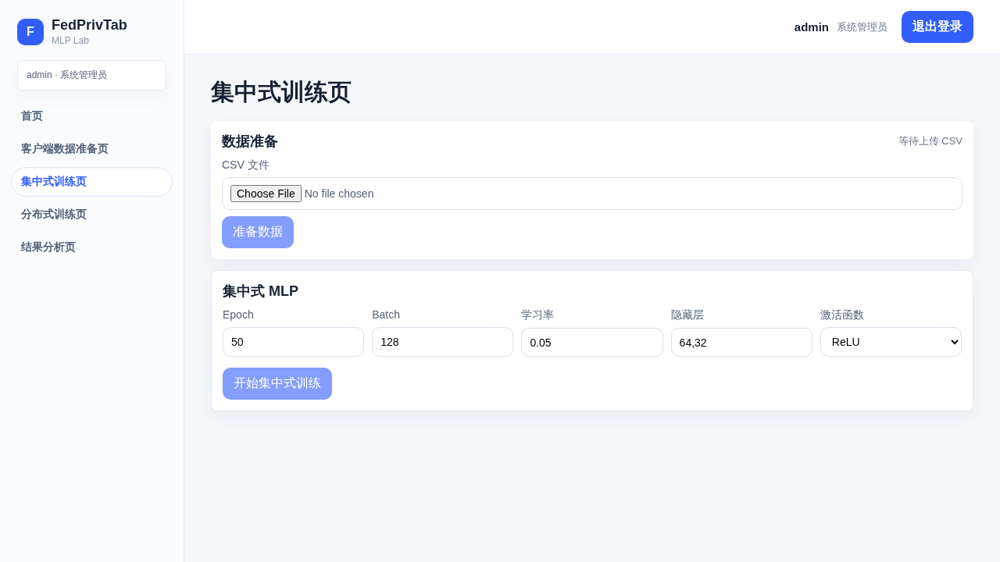
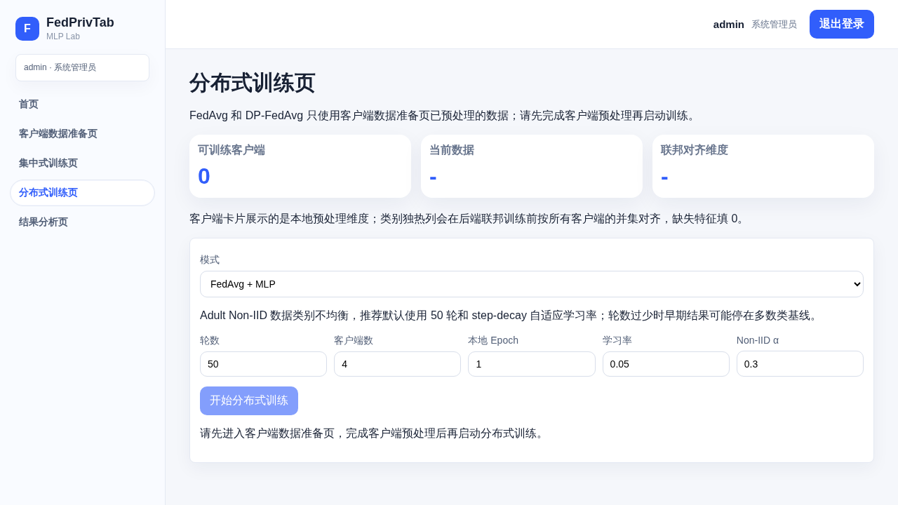
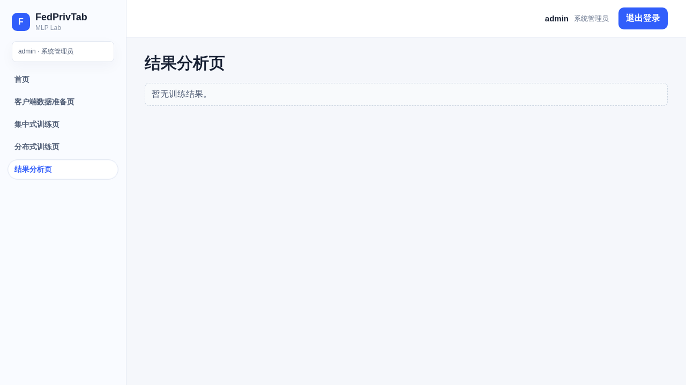
二、API 形式：真实接口训练脚本
API 执行模式：http。experiment_results.json 是 /train API 响应对象的缓存副本；当 RUN_API_EXPERIMENTS=False 时从缓存恢复 api_results，当该标志为 True 时同一个变量直接来自实时 /train 调用。metrics_summary.csv 只是由 API 结果派生出的辅助导出表，不作为绘图数据源。
默认配置来源
主实验默认配置由紧凑消融实验选择，消融记录保存于 default_config_ablation.json。集中式 MLP、FedAvg MLP 与 DP-FedAvg MLP 都使用相同 MLP 架构：hidden_layers=2、hidden_units='64,32'、activation='ReLU'。
import json
import time
from pathlib import Path
import requests
API_BASE = 'http://127.0.0.1:5000'
RUN_API_EXPERIMENTS = False
ROOT = Path('.')
OUT_DIR = ROOT / 'data/mywork/final_outputs'
RESULTS_JSON = OUT_DIR / 'experiment_results.json'
def post_preprocess(csv_path, client_id=None, role='centralized'):
"""Upload one CSV to /preprocess?async=true. role is 'client'/'centralized'."""
csv_path = Path(csv_path)
data = {'role': role}
if client_id is not None:
data['client_id'] = client_id
with csv_path.open('rb') as fh:
files = {'file': (csv_path.name, fh, 'text/csv')}
response = requests.post(
f'{API_BASE}/preprocess?async=true',
files=files,
data=data,
timeout=60,
)
response.raise_for_status()
return response.json()
def wait_job(job_id, poll_seconds=2, timeout_seconds=1800):
"""Poll /jobs/<job_id> until the async preprocessing job completes or fails."""
deadline = time.time() + timeout_seconds
while time.time() < deadline:
response = requests.get(f'{API_BASE}/jobs/{job_id}', timeout=30)
response.raise_for_status()
payload = response.json()
job = payload.get('job', payload)
status = job.get('status')
if status in {'completed', 'failed'}:
if status == 'failed':
raise RuntimeError(job)
return job
time.sleep(poll_seconds)
raise TimeoutError(f'Job {job_id} did not finish within {timeout_seconds} seconds')
def completed_preprocess_result(start_response):
job = start_response.get('job', start_response)
job_id = job.get('job_id') or job.get('id')
if job_id:
job = wait_job(job_id)
return job.get('result', job)
return start_response
def post_train(payload):
response = requests.post(f'{API_BASE}/train', json=payload, timeout=1800)
response.raise_for_status()
return response.json()
client_csvs = [
('client-1', ROOT / 'data/processed/adult_noniid_client_1.csv'),
('client-2', ROOT / 'data/processed/adult_noniid_client_2.csv'),
('client-3', ROOT / 'data/processed/adult_noniid_client_3.csv'),
('client-4', ROOT / 'data/processed/adult_noniid_client_4.csv'),
]
if RUN_API_EXPERIMENTS:
central_preprocess = completed_preprocess_result(
post_preprocess(ROOT / 'data/raw/adult.csv', role='centralized')
)
client_preprocess = [
completed_preprocess_result(post_preprocess(csv_path, client_id=client_id, role='client'))
for client_id, csv_path in client_csvs
]
else:
# experiment_results.json is a cached copy of previous /train API responses.
# It is used only when RUN_API_EXPERIMENTS=False to avoid rerunning heavy training.
saved = json.loads(RESULTS_JSON.read_text(encoding='utf-8'))
central_preprocess = saved['metadata']['central_preprocess']
client_preprocess = saved['metadata']['client_preprocess']
central_dataset_id = central_preprocess['dataset_id']
client_dataset_ids = [
item['dataset_id']
for item in client_preprocess
]
client_datasets = [
{'client_id': item['client_id'], 'dataset_id': item['dataset_id']}
for item in client_preprocess
]
centralized_payload = {
'target_column': 'income',
'batch_size': 128,
'hidden_layers': 2,
'hidden_units': '64,32',
'activation': 'ReLU',
'epochs': 50,
'lr': 0.05,
'lr_schedule': 'step_decay',
'lr_decay': 0.5,
'lr_step_size': 15,
'lr_min': 0.005,
'seed': 42,
'mode': 'centralized',
'dataset_id': central_dataset_id,
}
fedavg_payload = {
'target_column': 'income',
'clients': 4,
'local_epochs': 1,
'batch_size': 32,
'hidden_layers': 2,
'hidden_units': '64,32',
'activation': 'ReLU',
'rounds': 50,
'lr': 0.05,
'lr_schedule': 'step_decay',
'lr_decay': 0.5,
'lr_step_size': 15,
'lr_min': 0.005,
'seed': 42,
'client_fraction': 1.0,
'mode': 'fedavg',
'dirichlet_alpha': 0.3,
'client_dataset_ids': client_dataset_ids,
'client_datasets': client_datasets,
}
dp_fedavg_payload = {
**fedavg_payload,
'mode': 'dp_fedavg',
'noise_multiplier': 0.1,
'lr': 0.03,
'lr_schedule': 'step_decay',
'lr_decay': 0.5,
'lr_step_size': 15,
'lr_min': 0.005,
'epsilon': 4.0,
'delta': 1e-5,
'clip_norm': 1.0,
}
if RUN_API_EXPERIMENTS:
api_results = [
{'name': 'centralized_mlp', 'requested_config': centralized_payload, **post_train(centralized_payload)},
{'name': 'fedavg_mlp', 'requested_config': fedavg_payload, **post_train(fedavg_payload)},
{'name': 'dp_fedavg_mlp', 'requested_config': dp_fedavg_payload, **post_train(dp_fedavg_payload)},
]
else:
# Same variable shape as live /train runs, loaded from the cached API response record.
api_results = saved['results']
experiments = {item['name']: item for item in api_results}
{
'central_dataset_id': central_dataset_id,
'client_dataset_ids': client_dataset_ids,
'client_datasets': client_datasets,
'train_payload_modes': [
centralized_payload['mode'],
fedavg_payload['mode'],
dp_fedavg_payload['mode'],
],
'api_results_source': 'live /train calls' if RUN_API_EXPERIMENTS else 'cached /train API responses in experiment_results.json',
'loaded_existing_results': not RUN_API_EXPERIMENTS,
}
主要指标
| 实验 | 模式 | Accuracy | Precision | Recall | F1 | AUC | 噪声系数 | alpha |
|---|---|---|---|---|---|---|---|---|
| centralized_mlp | centralized | 0.8531 | 0.7268 | 0.6245 | 0.6718 | 0.9083 | ||
| fedavg_mlp | fedavg | 0.8428 | 0.7332 | 0.5454 | 0.6255 | 0.8962 | 0.3000 | |
| dp_fedavg_mlp | dp_fedavg | 0.8118 | 0.6877 | 0.4000 | 0.5058 | 0.8537 | 0.1000 | 0.3000 |
| dp_noise_0.1 | dp_fedavg | 0.8118 | 0.6877 | 0.4000 | 0.5058 | 0.8537 | 0.1000 | 0.3000 |
| dp_noise_0.2 | dp_fedavg | 0.7756 | 0.5400 | 0.4582 | 0.4957 | 0.7707 | 0.2000 | 0.3000 |
| dp_noise_0.5 | dp_fedavg | 0.4850 | 0.3027 | 0.8740 | 0.4497 | 0.6681 | 0.5000 | 0.3000 |
| alpha_0.1 | fedavg | 0.8428 | 0.7332 | 0.5454 | 0.6255 | 0.8962 | 0.1000 | |
| alpha_0.3 | fedavg | 0.8428 | 0.7332 | 0.5454 | 0.6255 | 0.8962 | 0.3000 | |
| alpha_1.0 | fedavg | 0.8428 | 0.7332 | 0.5454 | 0.6255 | 0.8962 | 1.0000 |
alpha 敏感性实验使用显式客户端 CSV 固定划分，因此 alpha 主要是配置记录，不代表重新按 Dirichlet 分布切分后的客户端数据。
三模型 Accuracy/F1/AUC 对比
集中式 MLP、FedAvg MLP 与 DP-FedAvg MLP 的 Accuracy、F1 和 AUC 对比。
from pathlib import Path
import json
import numpy as np
import matplotlib.pyplot as plt
out = Path('data/mywork/final_outputs')
if not out.exists():
out = Path.cwd()
# Plotting data comes from cached /train API response objects, not CSV summaries.
results = json.loads((out / 'experiment_results.json').read_text(encoding='utf-8'))
experiments = {item['name']: item for item in results['results']}
def metric_row(name):
item = experiments[name]
requested = item.get('requested_config') or {}
dp = item.get('dp') or {}
return {
'name': name,
**(item.get('metrics') or {}),
'noise_multiplier': dp.get('noise_multiplier', requested.get('noise_multiplier')),
'dirichlet_alpha': requested.get('dirichlet_alpha'),
}
main_names = ['centralized_mlp', 'fedavg_mlp', 'dp_fedavg_mlp']
label_map = {
'centralized_mlp': 'Centralized MLP',
'fedavg_mlp': 'FedAvg MLP',
'dp_fedavg_mlp': 'DP-FedAvg MLP',
}
metrics = ['accuracy', 'f1', 'auc']
plot_rows = [metric_row(name) for name in main_names]
x = np.arange(len(main_names))
width = 0.24
fig, ax = plt.subplots(figsize=(8.4, 4.8), dpi=140)
colors = ['#28666e', '#c75000', '#5b5f97']
for offset, metric, color in zip([-width, 0, width], metrics, colors):
values = [row[metric] for row in plot_rows]
bars = ax.bar(x + offset, values, width, label=metric.upper(), color=color)
ax.bar_label(bars, fmt='%.3f', fontsize=8, padding=2)
ax.set_xticks(x)
ax.set_xticklabels([label_map[name] for name in main_names], rotation=12, ha='right')
ax.set_ylim(0, 1.02)
ax.set_ylabel('Score')
ax.set_title('Main Model Accuracy / F1 / AUC')
ax.grid(axis='y', alpha=0.28)
ax.legend(ncols=3, loc='lower right')
fig.tight_layout()
plt.show()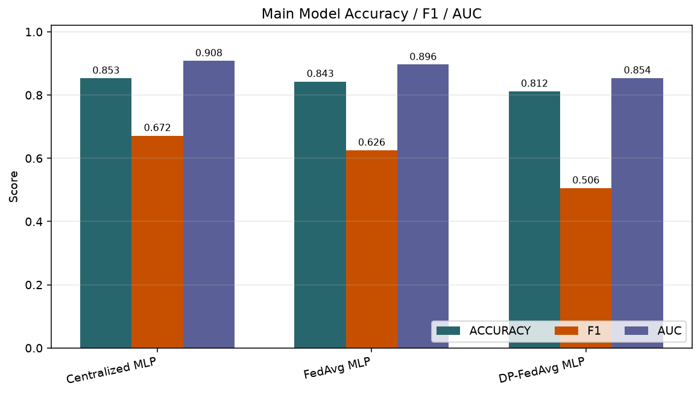
训练 Accuracy 曲线
三类主要训练流程的 Accuracy 随 epoch/round 的变化。
from pathlib import Path
import json
import numpy as np
import matplotlib.pyplot as plt
out = Path('data/mywork/final_outputs')
if not out.exists():
out = Path.cwd()
# Plotting data comes from cached /train API response objects, not CSV summaries.
results = json.loads((out / 'experiment_results.json').read_text(encoding='utf-8'))
experiments = {item['name']: item for item in results['results']}
def metric_row(name):
item = experiments[name]
requested = item.get('requested_config') or {}
dp = item.get('dp') or {}
return {
'name': name,
**(item.get('metrics') or {}),
'noise_multiplier': dp.get('noise_multiplier', requested.get('noise_multiplier')),
'dirichlet_alpha': requested.get('dirichlet_alpha'),
}
main_names = ['centralized_mlp', 'fedavg_mlp', 'dp_fedavg_mlp']
label_map = {
'centralized_mlp': 'Centralized MLP',
'fedavg_mlp': 'FedAvg MLP',
'dp_fedavg_mlp': 'DP-FedAvg MLP',
}
fig, ax = plt.subplots(figsize=(8.4, 4.8), dpi=140)
for name in main_names:
values = experiments[name]['history']['accuracy']
lr_values = experiments[name]['history'].get('lr', [])
lr_note = ''
if lr_values:
lr_note = f" (LR {lr_values[0]:.3f}->{lr_values[-1]:.3f})"
ax.plot(range(1, len(values) + 1), values, marker='o', linewidth=2, label=label_map[name] + lr_note)
ax.set_xlabel('Epoch / Communication round')
ax.set_ylabel('Training accuracy')
ax.set_title('Training Accuracy Curves (all main models use step-decay LR)')
ax.set_ylim(0.72, 0.86)
ax.grid(alpha=0.28)
ax.legend()
fig.tight_layout()
plt.show()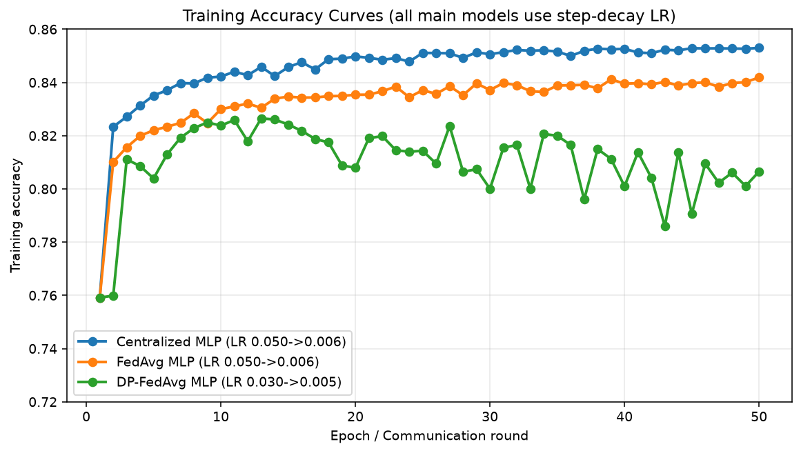
训练 Loss 曲线
三类主要训练流程的 Loss 随 epoch/round 的变化。
from pathlib import Path
import json
import numpy as np
import matplotlib.pyplot as plt
out = Path('data/mywork/final_outputs')
if not out.exists():
out = Path.cwd()
# Plotting data comes from cached /train API response objects, not CSV summaries.
results = json.loads((out / 'experiment_results.json').read_text(encoding='utf-8'))
experiments = {item['name']: item for item in results['results']}
def metric_row(name):
item = experiments[name]
requested = item.get('requested_config') or {}
dp = item.get('dp') or {}
return {
'name': name,
**(item.get('metrics') or {}),
'noise_multiplier': dp.get('noise_multiplier', requested.get('noise_multiplier')),
'dirichlet_alpha': requested.get('dirichlet_alpha'),
}
main_names = ['centralized_mlp', 'fedavg_mlp', 'dp_fedavg_mlp']
label_map = {
'centralized_mlp': 'Centralized MLP',
'fedavg_mlp': 'FedAvg MLP',
'dp_fedavg_mlp': 'DP-FedAvg MLP',
}
fig, ax = plt.subplots(figsize=(8.4, 4.8), dpi=140)
for name in main_names:
values = experiments[name]['history']['loss']
lr_values = experiments[name]['history'].get('lr', [])
lr_note = ''
if lr_values:
lr_note = f" (LR {lr_values[0]:.3f}->{lr_values[-1]:.3f})"
ax.plot(range(1, len(values) + 1), values, marker='o', linewidth=2, label=label_map[name] + lr_note)
ax.set_xlabel('Epoch / Communication round')
ax.set_ylabel('Training loss')
ax.set_title('Training Loss Curves (all main models use step-decay LR)')
ax.grid(alpha=0.28)
ax.legend()
fig.tight_layout()
plt.show()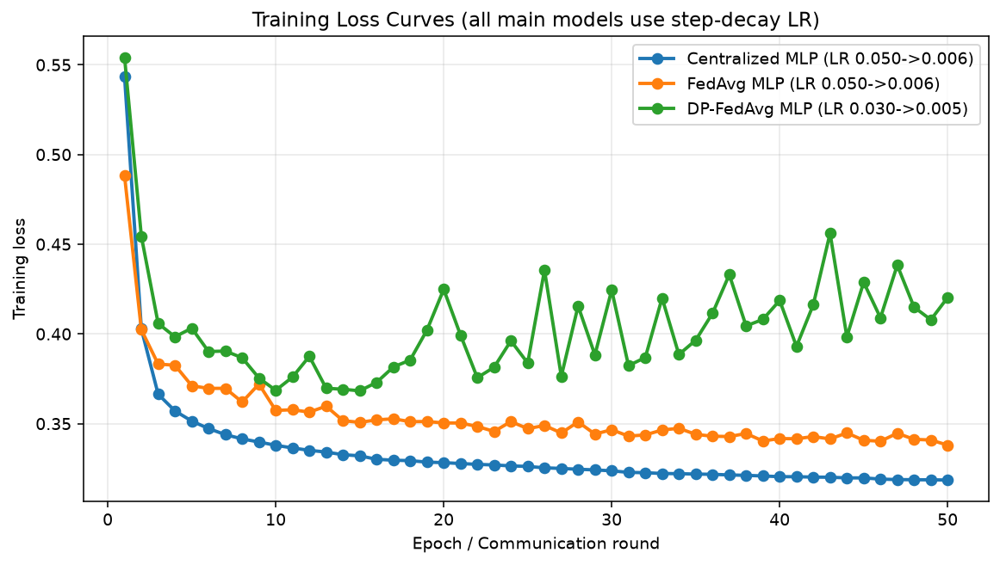
三模型混淆矩阵
集中式 MLP、FedAvg MLP 与 DP-FedAvg MLP 的混淆矩阵。
from pathlib import Path
import json
import numpy as np
import matplotlib.pyplot as plt
out = Path('data/mywork/final_outputs')
if not out.exists():
out = Path.cwd()
# Plotting data comes from cached /train API response objects, not CSV summaries.
results = json.loads((out / 'experiment_results.json').read_text(encoding='utf-8'))
experiments = {item['name']: item for item in results['results']}
def metric_row(name):
item = experiments[name]
requested = item.get('requested_config') or {}
dp = item.get('dp') or {}
return {
'name': name,
**(item.get('metrics') or {}),
'noise_multiplier': dp.get('noise_multiplier', requested.get('noise_multiplier')),
'dirichlet_alpha': requested.get('dirichlet_alpha'),
}
main_names = ['centralized_mlp', 'fedavg_mlp', 'dp_fedavg_mlp']
label_map = {
'centralized_mlp': 'Centralized MLP',
'fedavg_mlp': 'FedAvg MLP',
'dp_fedavg_mlp': 'DP-FedAvg MLP',
}
class_labels = ['<=50K', '>50K']
matrices = {
name: np.array(experiments[name]['metrics']['confusion_matrix'])
for name in main_names
}
vmax = max(int(matrix.max()) for matrix in matrices.values())
fig, axes = plt.subplots(1, 3, figsize=(11.2, 4.2), dpi=140)
for idx, (ax, name) in enumerate(zip(axes, main_names)):
matrix = matrices[name]
metrics = experiments[name]['metrics']
ax.imshow(matrix, cmap='Blues', vmin=0, vmax=vmax)
ax.set_title(
f"{label_map[name]}\n"
f"Acc {metrics['accuracy']:.3f} | F1 {metrics['f1']:.3f} | AUC {metrics['auc']:.3f}",
fontsize=9,
fontweight='normal',
)
ax.set_xlabel('Predicted income')
if idx == 0:
ax.set_ylabel('True income')
ax.set_xticks([0, 1], labels=class_labels)
ax.set_yticks([0, 1], labels=class_labels)
row_totals = matrix.sum(axis=1, keepdims=True)
row_percentages = np.divide(
matrix,
row_totals,
out=np.zeros_like(matrix, dtype=float),
where=row_totals != 0,
) * 100
for i in range(matrix.shape[0]):
for j in range(matrix.shape[1]):
color = 'white' if matrix[i, j] > vmax * 0.50 else '#1f2933'
ax.text(
j,
i,
f'{matrix[i, j]:,}\n{row_percentages[i, j]:.1f}%',
ha='center',
va='center',
color=color,
fontsize=8,
)
fig.suptitle('Confusion Matrices (shared color scale)', y=0.96, fontsize=12)
fig.subplots_adjust(left=0.07, right=0.985, top=0.76, bottom=0.18, wspace=0.38)
plt.show()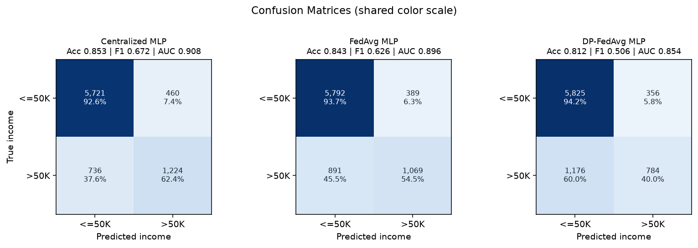
DP 噪声敏感性
不同 noise_multiplier 下 DP-FedAvg 的指标变化，反映隐私扰动与效用之间的经验权衡。
from pathlib import Path
import json
import numpy as np
import matplotlib.pyplot as plt
out = Path('data/mywork/final_outputs')
if not out.exists():
out = Path.cwd()
# Plotting data comes from cached /train API response objects, not CSV summaries.
results = json.loads((out / 'experiment_results.json').read_text(encoding='utf-8'))
experiments = {item['name']: item for item in results['results']}
def metric_row(name):
item = experiments[name]
requested = item.get('requested_config') or {}
dp = item.get('dp') or {}
return {
'name': name,
**(item.get('metrics') or {}),
'noise_multiplier': dp.get('noise_multiplier', requested.get('noise_multiplier')),
'dirichlet_alpha': requested.get('dirichlet_alpha'),
}
noise_rows = [metric_row(name) for name in experiments if name.startswith('dp_noise_')]
noise_rows = sorted(noise_rows, key=lambda row: row['noise_multiplier'])
noise_values = [row['noise_multiplier'] for row in noise_rows]
lr_values = experiments['dp_noise_0.1']['history'].get('lr', [])
fig, ax = plt.subplots(figsize=(8.4, 4.8), dpi=140)
for metric, color in [('accuracy', '#28666e'), ('f1', '#c75000'), ('auc', '#5b5f97')]:
ax.plot(noise_values, [row[metric] for row in noise_rows], marker='o', linewidth=2, label=metric.upper(), color=color)
ax.set_xlabel('Noise multiplier')
ax.set_ylabel('Score')
ax.set_title(f'DP Noise Sensitivity (shared step-decay LR {lr_values[0]:.3f}->{lr_values[-1]:.3f})' if lr_values else 'DP Noise Sensitivity')
ax.set_ylim(0.48, 0.92)
ax.grid(alpha=0.28)
ax.legend()
fig.tight_layout()
plt.show()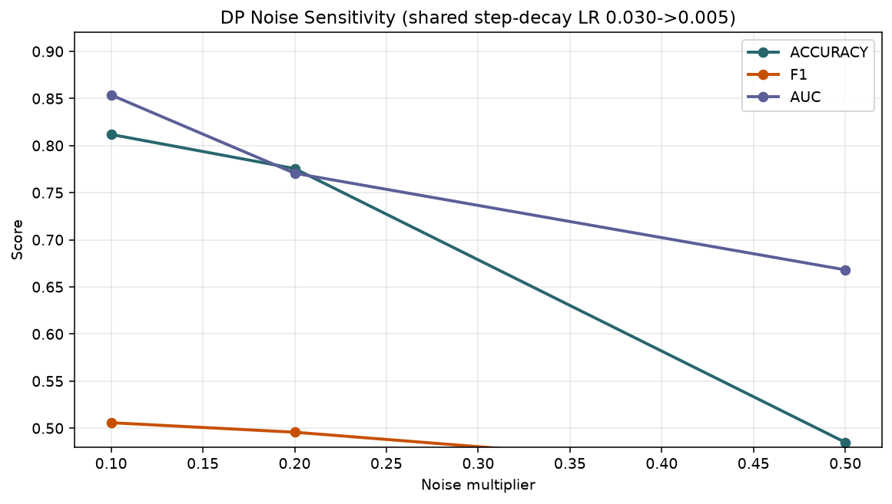
alpha 敏感性
本实验使用显式客户端 CSV 固定划分，因此 alpha 主要是配置记录，不代表重新采样后的 Dirichlet Non-IID 强度。
from pathlib import Path
import json
import numpy as np
import matplotlib.pyplot as plt
out = Path('data/mywork/final_outputs')
if not out.exists():
out = Path.cwd()
# Plotting data comes from cached /train API response objects, not CSV summaries.
results = json.loads((out / 'experiment_results.json').read_text(encoding='utf-8'))
experiments = {item['name']: item for item in results['results']}
def metric_row(name):
item = experiments[name]
requested = item.get('requested_config') or {}
dp = item.get('dp') or {}
return {
'name': name,
**(item.get('metrics') or {}),
'noise_multiplier': dp.get('noise_multiplier', requested.get('noise_multiplier')),
'dirichlet_alpha': requested.get('dirichlet_alpha'),
}
alpha_rows = [metric_row(name) for name in experiments if name.startswith('alpha_')]
alpha_rows = sorted(alpha_rows, key=lambda row: row['dirichlet_alpha'])
alpha_values = [row['dirichlet_alpha'] for row in alpha_rows]
fig, ax = plt.subplots(figsize=(8.4, 4.8), dpi=140)
for metric, color in [('accuracy', '#28666e'), ('f1', '#c75000'), ('auc', '#5b5f97')]:
ax.plot(alpha_values, [row[metric] for row in alpha_rows], marker='o', linewidth=2, label=metric.upper(), color=color)
ax.set_xlabel('Requested dirichlet_alpha')
ax.set_ylabel('Score')
ax.set_title('Alpha Sensitivity with Fixed Explicit Client CSV Partitions')
ax.set_ylim(0.55, 0.92)
ax.grid(alpha=0.28)
ax.legend()
ax.text(0.5, 0.575, 'Fixed client_id CSV partitions; alpha is recorded config, not resampling.', ha='center', fontsize=9)
fig.tight_layout()
plt.show()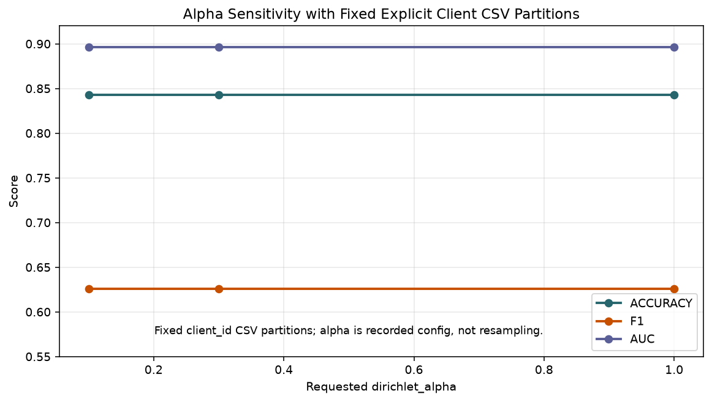
结论
集中式模型是合并数据参照；FedAvg 显示固定 Non-IID 客户端划分下的协作训练效果；DP-FedAvg 展示 L2 裁剪和高斯噪声机制带来的隐私-效用权衡。由于没有集成 Opacus 或严格 privacy accountant，本实验中的 epsilon/delta 只作为记录和配置的实验参数。